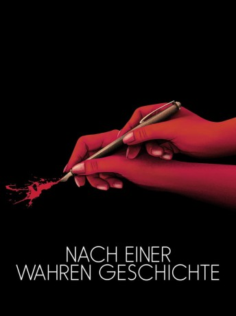
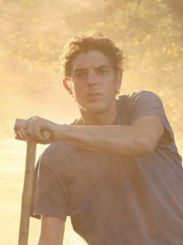

#9704 Nach einer wahren Geschichte
 
 IMDB-Wertung: 5.7 / 10
IMDB-Wertung: 5.7 / 10  Metascore: 43
Metascore: 43 
Delphine ist eine erfolgreiche Schriftstellerein, privat jedoch eher zurückhaltend. In ihrem letzten Buch hat sie sich mit ihrer eigenen Familie auseinandergesetzt, was sie körperlich und geistig sehr ausgelaugt hat. Sie setzt sich selbst unter großen Druck, gleich mit dem nächsten Buch anzufangen, als eines Tages eine mysteriöse Fremde namens Elle in ihr Leben tritt. Die beiden freunden sich bei nächtelangen Diskussionen über Freunde, Filme und Bücher langsam an. Doch je mehr Delphine und Elle miteinander sprechen, desto mehr versiegt Delphines sowieso schon gehemmte Fähigkeit zu schreiben. Vermeintlich selbstlos übernimmt Elle die Kommunikation und andere Dinge für sie, doch was zunächst wie ein glücklicher Zufall wirkt, stellt sich bald als große Gefahr für Delphine heraus, denn Elle wird ihr immer ähnlicher und kleidet und bewegt sich schließlich sogar wie sie...
Jahr: 2017
Dauer: 101 Minuten
FSK:
Land: Frankreich Studio: Joyncontents GroupTonspuren: DTS - ,
Untertitel:
Auflösung: 1080p (1920x800) Größe: 4485 MB
Genre: Thriller, Drama, Komödie, Mystery
Regisseur:  Roman Polanski
Roman Polanski
Drehbuch: Olivier Assayas, Roman Polanski, Delphine de Vigan
Soundtrack: Alexandre Desplat
Darsteller:
 Emmanuelle Seigner als Delphine Dayrieux
Emmanuelle Seigner als Delphine Dayrieux Eva Green als Elle
Eva Green als Elle Vincent Perez als François
Vincent Perez als François Dominique Pinon als Raymond
Dominique Pinon als Raymond Noémie Lvovsky als La commissaire d'exposition
Noémie Lvovsky als La commissaire d'exposition-  Damien Bonnard als Le preneur de son
- Saadia Bentaïeb als Jeanne
- Sophie Gibert als Doublure Polyvalente Emmanuelle Seigner
- Camille Chamoux als Oriane, l'attachée de presse
- Brigitte Roüan als La documentaliste du lycée
- Josée Dayan als Karina
- Leonello Brandolini als L'éditeur italien
- Elisabeth Quin als La journaliste
- Véronique Vasseur als La mère de Delphine
- Stanislas Moreau als Le barman
- Valérie Schiatti de Monza als Femme Salon du livre
- Anouchka Csernakova als Femme Salon du livre
- Paul Garcia als Homme Salon du livre
- Mélanie Bourgeois als Femme Salon du livre
- Jean Frischmann als Homme Salon du livre
- Charlotte Mangel als Femme Salon du livre
- Valérie de Monza als Femme Salon Du Livre
Datei: X:\2017(N-Z)\Nach einer wahren Geschichte (2017, FSK, 1920x800).mkv seit 05.10.2018
Festplatte: HD 2017(A-Z)-2018(A-F)
 Es gibt insgesamt 170 Filme in der Gruppe '2017(N-Z)'
Es gibt insgesamt 170 Filme in der Gruppe '2017(N-Z)'